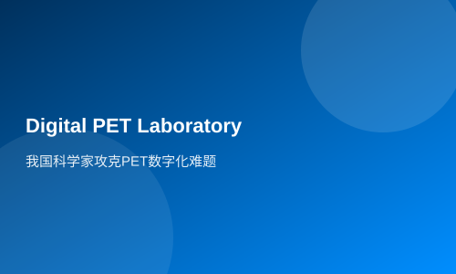

Our scientists have solved the problem of PET digitization
The key technology of all-digital PET imaging was appraised by an expert group led by Yu Mengsun, a Chinese academician of engineering, in Wuhan on April 5, and was considered to have reached the international leading level...
On April 5th, the key technologies of full digital PET imaging were appraised in Wuhan by a panel of experts led by Chinese Academy of Engineering academician Yu Mengsun. The appraisal concluded that these technologies have reached international leading levels. This technological breakthrough made by Chinese scientists in the field of PET digitization means earlier and more sensitive detection of tumors and diagnosis of cancer, contributing to human welfare.
The positron emission tomography (PET) scanner, abbreviated as PET, is currently one of the most advanced medical imaging technologies following ultrasound, CT, and magnetic resonance imaging. However, due to technical bottlenecks in digitizing ultra-high-speed scintillation pulses, full digitalization of PET has been challenging, with only analog and hybrid analog-digital machines available.
In response to this global challenge, Professor Xie Qingguo from the Biomedical Photonics Department at the Wuhan National Laboratory for Optoelectronics (WNLFO) and a professor at Huazhong University of Science and Technology's School of Life Sciences innovatively proposed the 'multi-voltage threshold sampling method', accurately achieving precise digitalization of high-speed scintillation pulses, leading to the development of full-digital PET detectors and the world's first small-scale digital PET machine.
Professor Xie Qingguo introduced that experiments conducted with this small-scale digital PET on small animals showed that its main performance metric, image spatial resolution, has surpassed the millimeter level into sub-millimeter precision, reaching 0.87 mm, capable of detecting lesions as small as 0.66 cubic millimeters.
Currently, the best clinical PET spatial resolution is 4.5 mm; with digital PET for human imaging, the spatial resolution can be less than 1.5 mm. This means that using digital PET could detect the smallest tumors, which are one-twentieth of what current PET machines can detect.
At present, only Siemens, General Electric, and Philips globally have the capability to independently develop and produce PET imaging equipment. The independent innovation and industrialization of China's digital PET not only benefits a large number of patients but also breaks the monopoly of Western companies, achieving a breakthrough in China's high-end medical equipment industry.
Tags